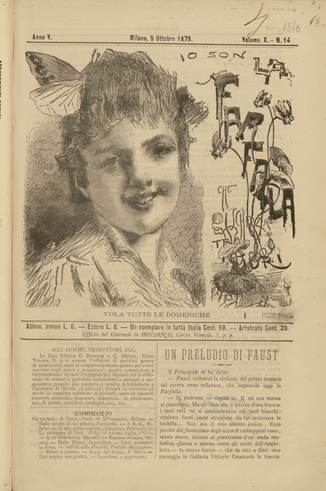
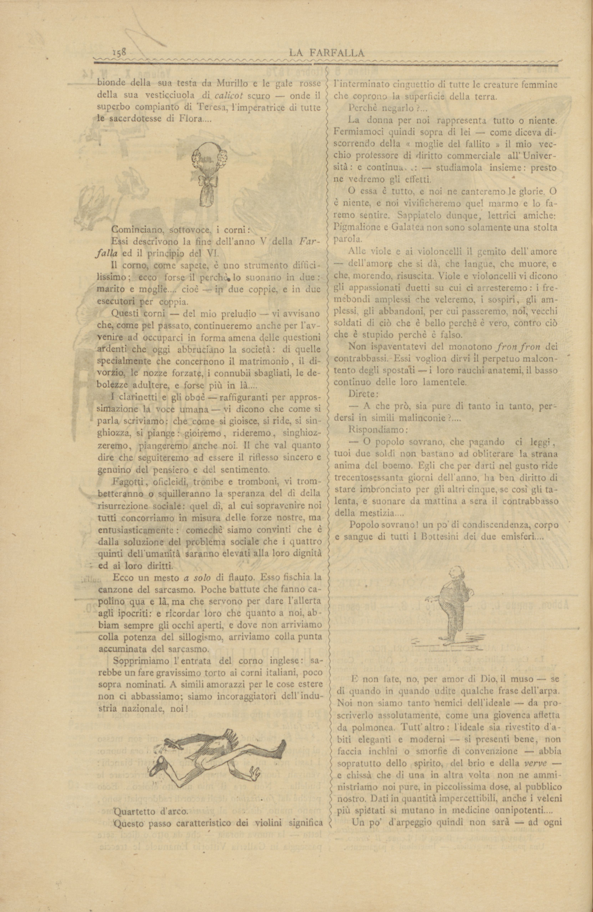
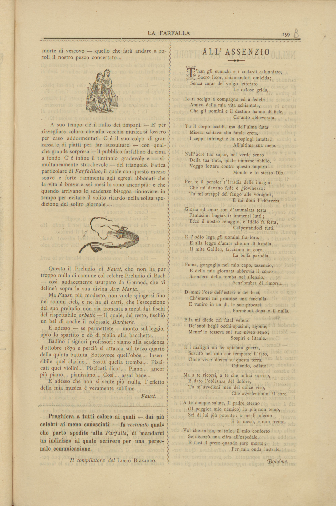

Codifica a cura di Francesca D'Apolito
COVerLeSS è un ambiente web integrato e open access, interamente dedicato alla ricezione contemporanea della letteratura del Verismo italiano. La forte impronta storico-sociale che ha caratterizzato le grandi opere e i testi fondativi di questo movimento (dalle novelle di Vita dei campi ai Malavoglia, dalle novelle Rusticane al Mastro-don Gesualdo, dal romanzo Giacinta di Capuana alle prime novelle di De Roberto), si è riflessa in un ricchissimo pullulare di recensioni, polemiche letterarie, saggi, interventi di tipo teorico, riflessioni in chiave militante.
Fondata a Cagliari da Angelo Sommaruga, con cadenza quindicinale, «La Farfalla» vide la luce il 27 febbraio 1876. Si presentava al pubblico «semplice, pulita, senza fregi e senza fronzoli», quasi del tutto priva di quelle novità grafiche che caratterizzeranno le riviste successive. I maggiori collaboratori furono, oltre Giarelli, autore della maggior parte degli articoli, Ottone Bacaredda, Felice Cameroni, Paolo Valera, Ferdinando Fontana, Cesario Testa, Domenico Milelli, Remigio Zena. Nel 1877 Sommaruga ritornò a Milano, portando con sé la rivista. Il primo numero milanese del 30 settembre uscì con una nuova testata che preannunciava lo stile liberty: un disegno di Tranquillo Cremona che raffigurava una graziosa fanciulla incastonato tra le prime due lettere del titolo.
Si è scelto di codificare il testo mantenendo la corrispondenza esatta delle righe dell'edizione a stampa attraverso il tag lb.
Si è scelto di mantenere la sillabazione delle parole per il ritorno a capo. I ritorni a capo che spezzano una parola sono stati marcati con l'attributo break="no" (per indicare l'unità logica della parola) e rend="-" (per documentare la presenza del trattino tipografico a stampa).
Si è scelto di mantenere la spaziatura originale.
Si è scelto di creare una tassonomia in textClass con i principali temi del Verismo riconosciuti nei testi codificati. All'interno del testo, sono state marcate parole e frasi esemplificative di questi temi, ricondotte alle categorie corrispondenti attraverso l'uso del tag ref.
Il testo, intitolato "Un preludio di Faust" e firmato "Faust", illustra la linea editoriali e gli intenti della rivista "La Farfalla" in vista dell'anno nuovo. L'autore presenta i toni e i temi che saranno affrontati la rivista attraverso la metafora di un'esecuzione orchestrale, facendo riferimento a strumenti musicali. Ad esempio presenta il tema delle questioni matrimoniali e del divorzio attraverso i corni; il tema della sincerità del pensiero e del sentimento attraverso clarinetti e oboè; il tono sarcastico attraverso il flauto; ed altro ancora. Il testo presenta uno stile autoironico, sarcastico e letterario, presentando i tipici temi di evoluzione sociale e denuncia tipici dell'epoca.
Il Principale m'ha detto:
- Faust, scriverai la sinfonia del primo numero
del nuovo anno milanese, che imprende oggi la
Farfalla.
- Sì, padrone, - risposi io. E mi son messo
al pianoforte. Ma sì! Non era il quarto d'ora buono:
i tasti neri mi si confondevano coi tasti bianchi:
venivan fuori certe strappate da far arricciare le
budella.... Non era il mio minuto eroico.... Ecco
perchè dal fortissimo degli accordi raddoppiati sono,
mano mano, disceso al pianissimo d'un' onda me-
lodica, glauca e serena come gli occhi dell'Angio-
letta - la nuova fioraia - che da otto o dieci sere
passeggia in Galleria Vittorio Emanuele le treccie
Cominciano, sottovoce, i corni:
Essi descrivono la fine dell'anno V della Farfalla
ed il principio del VI.
Il corno, come sapete, è uno strumento diffici-
lissimo; ecco forse il perchè lo suonano in due:
marito e moglie.... cioè - in due coppie, e in due
esecutori per coppia.
Questi corni - del mio preludio - vi avvisano
che, come pel passato, continueremo anche per l'av-
venire ad occuparci in forma amena delle questioni
ardenti che oggi abbruciano la società: di quelle
specialmente che concernono il matrimonio, il di-
vorzio, le nozze forzate, i connubii sbagliati, le de-
bolezze adultere, e forse più in là....
I clarinetti e gli oboè - raffiguranti per appros-
simazione la voce umana - vi dicono che come si
parla scriviamo: che come si gioisce, si ride, si sin-
ghiozza, si piange: gioiremo, rideremo, singhioz-
zeremo, piangeremo anche noi. Il che val quanto
dire che seguiteremo ad essere il riflesso sincero e
genuino del pensiero e del sentimento.
Fagotti, oficleidi, trombe e tromboni, vi tromb-
betteranno o squilleranno la speranza del dì della
risurrezione sociale: quel dì, al cui sopravvenire noi
tutti concorriamo in misura delle forze nostre, ma
entusiasticamente: comechè siamo convinti che è
dalla soluzione del problema sociale che i quattro
quinti dell'umanità saranno elevati alla loro dignità
ed ai loro diritti.
Ecco un mesto a solo di flauto. Esso fischia la
canzone del sarcasmo. Poche battute che fanno ca-
polino qua è là, ma che servono per dare l'allerta
agli ipocriti: e ricordar loro che quanto a noi, ab-
biam sempre gli occhi aperti, e dove non arriviamo
colla potenza del sillogismo, arriviamo colla punta
accuminata del sarcasmo.
Sopprimiamo l'entrata del corno inglese: sa-
rebbe un fare gravissimo torto ai corni italiani, poco
sopra nominati. A simili amorazzi per le cose estere
non ci abbassiamo; siamo incoraggitori dell'indu-
stria nazionale, noi!
Quartetto d'arco.
Questo passo caratteristico dei violini significa
Perchè negarlo?...
La donna per noi rappresenta tutto o niente.
Fermiamoci quindi sopra di lei - come diceva di-
scorrendo della « moglie del fallito » il mio vec-
chio professore di diritto commerciale all'Univer-
sità: e continuava: - studiamola insieme: presto
ne vedremo gli effetti.
O essa è tutto, e noi ne canteremo le glorie. O
è niente, e noi vivificheremo quel marmo e lo fa-
remo sentire. Sappiatelo dunque, lettrici amiche:
Pigmalione e Galatea non sono solamente una stolta parola.
Alle viole e ai violoncelli il gemito dell'amore
- dell'amore che si dà, che langue, che muore, e
che, morendo, risuscita. Viole e violoncelli vi dicono
gli appassionati duetti su cui ci arresteremo: i fre-
mebondi amplessi che veleremo, i sospiri, gli am-
plessi, gli abbandoni, per cui passeremo, noi, vecchi
soldati di ciò che è bello perchè è vero, contro ciò
che è stupido perchè è falso.
Non ispaventatevi del monotono fron fron dei
contrabbassi. Essi voglion dirvi il perpetuo malcon-
tento degli spostati - i loro rauchi anatermi, il basso
continuo delle loro lamentele.
Direte:
- A che prò, sia pure di tanto in tanto, per-
dersi in simili malinconie?...
Rispondiamo:
- O popolo sovrano, che pagando ci leggi,
tuoi due soldi non bastano ad obliterare la strana
anima del boemo. Egli che per darti nel gusto ride
trecentosessanta giorni dell'anno, ha ben diritto di
stare imbronciato per gli altri cinque, se così gli ta-
llenta, e suonare da mattina a sera il contrabbasso
della mestizia...
Popolo sovrano! un po' di condiscendenza, corpo
e sangue di tutti i Bottesini dei due emisferi....
E non fate, no, per amor di Dio, il muso - se
di quando in quando udite qualche frase dell'arpa.
Noi non siamo tanto nemici dell'ideale - da pro-
scriverlo assolutamente, come una giovenca affetta
da polmonea. Tutt'altro: l'ideale sia rivestito d'a-
biti eleganti e moderni - si presenti bene, non
faccia inchini o smorfie di convenzione - abbia
soprattutto dello spirito, del brio e della verve -
e chissà che di una in altra volta non ne ammi-
nistriamo noi pure, in piccolissima dose, al pubblico
nostro. Dati in quantità impercettibili, anche i veleni
più spietati si mutano in medicine onnipotenti....
Un po' d'arpeggio quindi non sarà - ad ogni
A suo tempo c'è il rullo dei timpani. - E' per
risvegliare coloro che alla vecchia musica si fossero
per caso addormentati. C'è il suo colpo di gran
cassa e di piatti per far sussultare - con qual-
che grande sorpresa - il pubblico farfallino da cima
a fondo. C'è infine il tintinnio gradevole e - si-
multaneamente stucchevole - del triangolo. Fatica
particolare di Farfallino, il quale con questo mezzo
soave e forte rammenta agli egregi abbonati che
la vita è breve e sei mesi lo sono ancor più: e che
quando arrivano le scadenze bisogna rinnovare in
tempo per evitare il solito ritardo nella solita spe-
dizione del solito giornale.....
Questo il Preludio di Faust, che non ha pur
troppo nulla di comune col celebre Preludio di Bach
- così audacemente usurpato da Gounod, che vi
delineò sopra la sua divina Ave Maria.
Ma Faust, più modesto, non vuole spingersi fino
nei sommi cieli, e ne ha di catti, che l'esecuzione
del suo preludio non sia troncata a metà da i fischi
del rispettabile orbetto - il quale, del resto, fischiò
un bel dì anche il colossale Barbiere.
E adesso - se permettete - monto sul leggìo,
apro lo spartito e dò di piglio alla bacchetta.
Badino i signori professori: siamo alla scadenza
d'ottobre 1879 e perciò si attacca sul terzo quarto
della quinta battuta. Sottovoce quell'oboe.... Insen-
sibile quel clarino.... Sssttt quella tromba.... Pizzi-
cati quei violini.... Pizzicati, dico!.... Piano.... ancor
più piano.... pianissimo.... Così.... assai bene....
E adesso che non si sente più nulla, l'effetto
della mia musica è veramente sublime.


